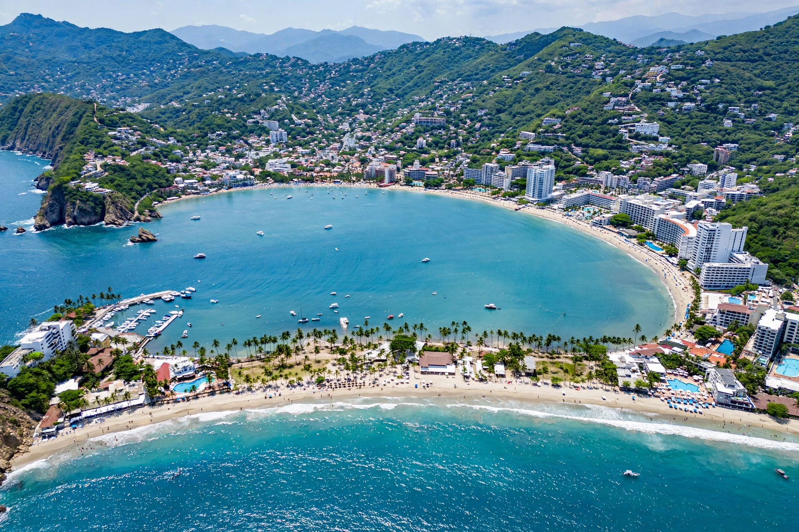

Acapulco

| Country | Mexico |
|---|---|
| State | Guerrero |
| Founded | 1550s (Spanish settlement) |
| Population (city) | ~660,000 (2020 census, approx.) |
| Time zone | UTC−6 (CST) |
Acapulco de Juárez, commonly called Acapulco, is a city and major seaport in the state of Guerrero on the Pacific coast of Mexico, about 380 kilometres southwest of Mexico City. Its name derives from Nahuatl words meaning "at the large reeds" or "place where the reeds were destroyed". Situated on a deep, semicircular bay, Acapulco was Mexico's first great resort town and remains one of its best-known beach destinations.
History
From 1565 to 1815 Acapulco was the Pacific terminus of the Manila galleon trade, linking New Spain with the Philippines and Asia; the annual galleon's arrival made it one of the most important ports of the Spanish Empire, guarded by the Fort of San Diego. After independence its importance declined until the 20th century, when President Miguel Alemán promoted it as a glamorous resort. In the 1950s and 1960s it became a playground for Hollywood stars and international elites.
Tourism
The city is divided into zones: traditional "Old Acapulco" near the zócalo, the hotel-lined Golden Zone along the Costera Miguel Alemán, and the newer Diamond Zone near the airport. Famous attractions include the La Quebrada cliff divers, who plunge 35 metres into a narrow inlet, the Fort of San Diego museum, and the beaches of the bay. In recent decades Acapulco has struggled with organised-crime violence and, in October 2023, was devastated by Hurricane Otis, a Category 5 storm that made landfall directly over the city.